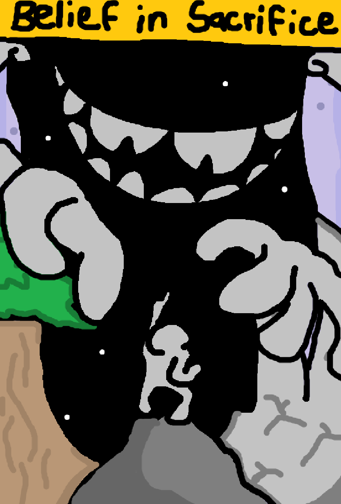
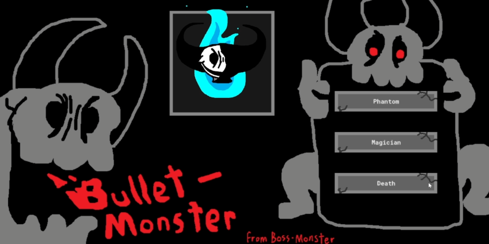
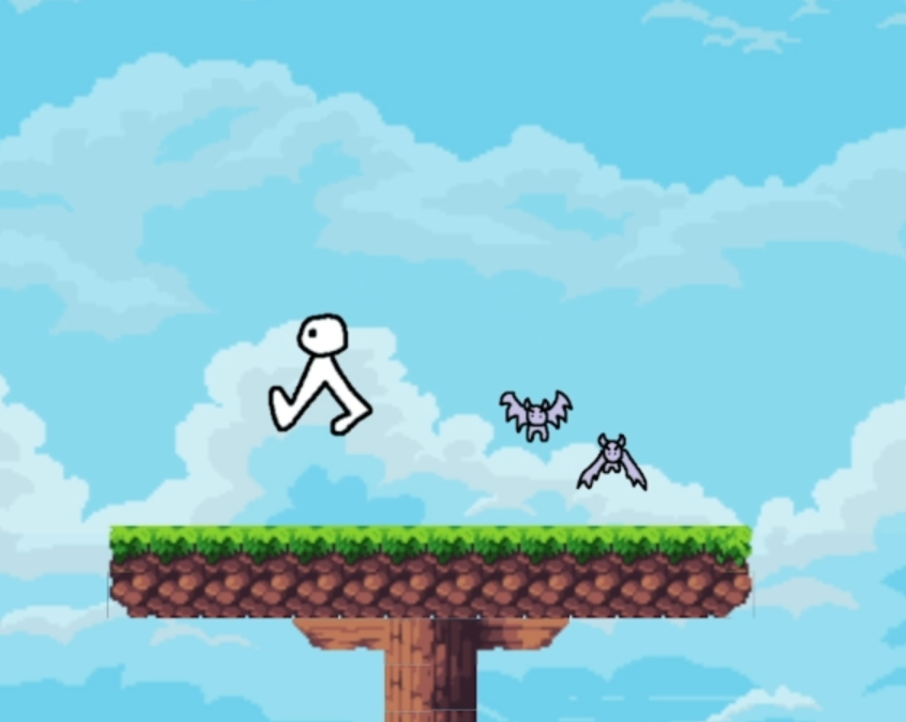
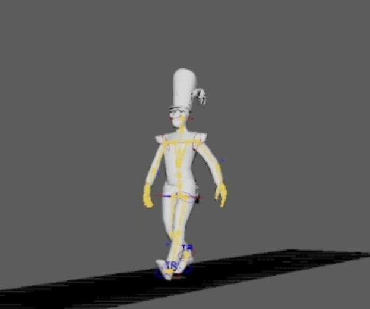

Some Cool Projects
I've made some pretty swag projects throughout my time here! These are just a few:
-
Belief in Sacrifice

Belief in Sacrifice was an open ended survival resource management game made entirely in Java. The game is played through the console, with supplimental images appearing on the side region. There's crafting, monsters, and secrets! -
Bullet Monster

Bullet Monster was a bullet-hell type game where you must survive endless storms of bullets trying to defeat monstrous bosses! There's three unique bosses to fight, and three alternate versions with much harder attacks! -
Bat Stomper

Bat Stomper was a very small game coded entirely with a C++ engine created in-class. All you do is run around on the platform and stomp those bats! -
Modeling

We took a class about modeling objects and people in Maya. I was quite proud of my creation, so I thought I may as well put it here, too.